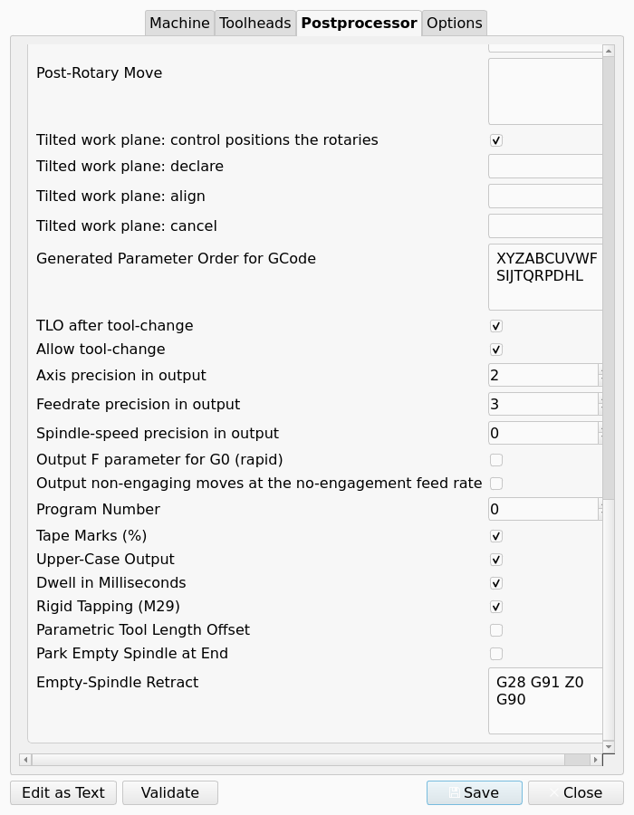
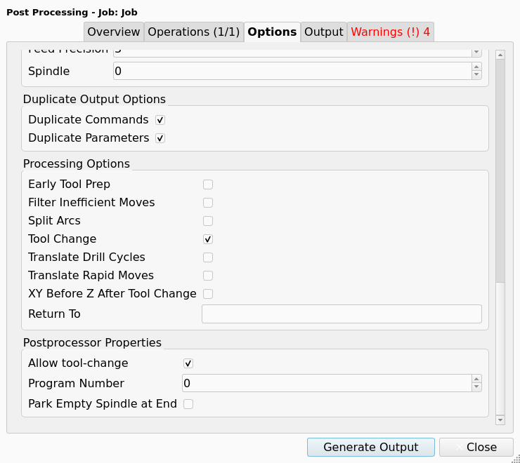

Fanuc Post-Processor
Description
introduced in 26.3: The fanuc Post-Processor (Post) writes G-code for Fanuc 0i, 16i, 18i, 21i and 30i mill controls. The Post also applies to controls that read Fanuc-compatible G-code. The fanuc Post is machine-based: a Machine selects the Post and holds its settings. The class is FanucPost in Path/Post/scripts/fanuc_post.py. Post-Processor Genealogy shows its parent class.
The fanuc Post adds these functions to the output that every machine-based Post writes:
-
The
%tape marks and anOprogram number. -
Rigid tapping with
M29. -
Native canned cycles, with the full parameter set on each block.
-
Dwell times in milliseconds.
-
An optional parametric tool length offset that reads the
#4120system variable. -
An optional block that parks the spindle with no Tool Bit before the postamble.
-
Upper-case output.
-
Tilted Work Planes with
G68.2,G53.1andG69, or with the DWO Rotation Strategy.
Machine describes the properties that are common to every machine-based Post. This page gives only the properties and the defaults that are different for the fanuc Post.
Properties
Each Post-Processor Property has one Property Scope. A Machine-scope property is edited on the Postprocessor tab of the Machine Editor only. A Job-scope property gets its default on that tab. The Options tab of the Post-Processing Dialog overrides a Job-scope property for one export. Machine Configuration gives the priority of the value sources.
Properties of the fanuc Post
| Property | Scope | Type | Default | Effect |
|---|---|---|---|---|
Program Number |
Job |
|
|
The number of the |
Tape Marks (%) |
Machine |
|
Checked |
Writes |
Upper-Case Output |
Machine |
|
Checked |
Writes the full program in upper case, comments included. |
Dwell in Milliseconds |
Machine |
|
Checked |
Writes the P word of |
Rigid Tapping (M29) |
Machine |
|
Checked |
Writes |
Parametric Tool Length Offset |
Machine |
|
Unchecked |
Replaces |
Park Empty Spindle at End |
Job |
|
Unchecked |
Writes |
Empty-Spindle Retract |
Machine |
|
|
The retract lines between |
The figure shows the eight properties, below the common properties, on the Postprocessor tab of the Machine Editor.

The next figure shows the two Job-scope properties in the Postprocessor Properties group of the Post-Processing Dialog.

Defaults of the common properties
The fanuc Post changes the defaults of these common properties. Each other common property has the default that Machine gives.
| Property | Default of the fanuc Post |
|---|---|
File Extension |
|
Preamble |
|
Postamble |
|
Safety Block |
Empty. The preamble sets the safe condition. |
Pre-Tool Change |
|
Drill Cycles to Translate |
Empty. The Post writes each drill cycle as a native canned cycle. |
Tool Radius Compensation (G41/G42) |
Checked |
Supported G-code Commands |
The common list, with |
Spindle-speed precision in output |
|
Generated Parameter Order for GCode |
|
The fanuc Post also changes the help text of Pre-Rotary Move, Post-Rotary Move and Tilted work plane: align. Work Planes describes the values for a Fanuc control.
Machine output options
The output options on the Options tab of the Machine Editor apply to the fanuc Post, with these exceptions:
-
The comment symbol is always
(. The Post ignores the comment symbol of the Machine. -
Duplicate Commands and Duplicate Parameters do not apply to a canned cycle block. Each canned cycle block has the cycle word and its full parameter set.
Output
Program start and end
Each section of the output starts with the % line when Tape Marks (%) is checked. The O line follows when Program Number is more than 0. These two lines come before the header.
When comments are enabled, the O line also has the Job label as a comment. The Post removes each parenthesis from the label. With Program Number set to 12 and a Job with the label "Bracket", the output starts with these lines:
%
O0012 (BRACKET)When Park Empty Spindle at End is checked, the Post writes the park block before the postamble. With the default Empty-Spindle Retract, the park block is:
M05
G28 G91 Z0
G90
M6 T0The last % line follows the postamble.
Canned cycles
The fanuc Post writes each drill cycle and each tapping cycle as a native canned cycle. Each block of a sequence of holes has the cycle word and all its parameters. A control that is set to non-modal cycles thus gets a complete block for each hole.
Rigid tapping
When Rigid Tapping (M29) is checked, the Post writes M29 S<rpm> as a separate block before each G84 or G74 block. The S value is the S word of the tapping cycle. When the cycle has no S word, the S value is the last spindle speed that an M3 or M4 command gave. The G84 or G74 block does not have an S word. The Post writes G80 after a sequence of tapping blocks.
The F word of a tapping cycle is the thread pitch multiplied by the spindle speed. This applies when Rigid Tapping (M29) is checked and when it is unchecked.
The export stops with an error when Rigid Tapping (M29) is checked and no spindle speed is available for a tapping cycle. The message names the Operation and the cycle command.
The Sanity Check of the fanuc Post gives a WARNING Squawk for the same condition. The Squawk applies to an active Operation that taps with no S word, when its Tool Controller also has a Spindle Speed of 0. The Sanity Check does not do this check when Rigid Tapping (M29) is unchecked.
Dwell
When Dwell in Milliseconds is checked, a dwell of 1.5 seconds is G4 P1500. A dwell of 0.5 seconds in a G82 cycle is P500.
Tool length offset
After a tool change, the fanuc Post writes G43 H<n>, where <n> is the number of the Tool Bit. When Parametric Tool Length Offset is checked, the Post writes these two lines as an alternative:
G91 G0 G43 G54 Z-[#[2000+#4120]] H#4120
G90The system variable #4120 is the active T code. The control gets the length of Tool Bit number n from the variable #[2000+n].
Arcs
The default word order of the fanuc Post has no K word. A helical arc gives its pitch through the Z word.
Work Planes
The fanuc Post can emit the dwo and twp values of the Machine’s Rotation Strategy. Machine lists the conditions for an Operation on a tilted Work Plane.
-
With
twp, the Post declares each tilted Work Plane withG68.2, aligns the Tool Axis withG53.1and cancels the plane withG69. -
With
dwo, the Post commands the rotary axes and writes the Toolpath rotated into the frame that the Machine reaches.
These common properties have values that are specific to a Fanuc control:
-
Pre-Rotary Move: the moves that bring the Tool Bit clear of the Model, in machine coordinates.
G53 G0 Z0lifts the Tool Bit to machine Z zero.G91 G28 Z0, thenG90, references the Z axis. -
Post-Rotary Move: with
dwo, the line that selects the dynamic fixture offset of the control, for exampleG54.2 P1. Withtwp, this block is usually empty. -
Tilted work plane: align: empty gives
G53.1. A 30i-class control that has the option acceptsG53.6, which keeps the tip of the Tool Bit in position while the rotary axes move.
A Work Plane can name a Fixture. A Fixture is a G54 to G59.9 selection, not the workholding. The fanuc Post also accepts G54.1 and writes its P word as an integer offset number.
Limitations
Examine the output before you run it on a machine. The fanuc Post was not tested on a Fanuc control.
|
-
The
fanucPost is for mill controls. -
The
fanucPost cannot emit thepost_transformvalue of Rotation Strategy. -
Rigid tapping needs a spindle speed. The export stops when a tapping cycle has no spindle speed.
-
Dwell in Milliseconds agrees with the Fanuc parameter DWL = 0. Uncheck the property for a control that reads the P word in seconds.
-
Park Empty Spindle at End writes
M6 T0. Some controls do not acceptT0. -
Parametric Tool Length Offset is for an offset table that keeps the negated length of Tool Bit number n in
#[2000+n]. -
A Fanuc comment always has parentheses. A different comment symbol in the Machine has no effect.